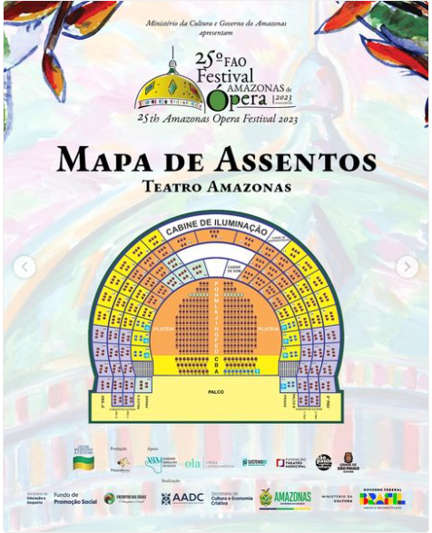

No coração de Manaus
O Opus Magnum acontece em um dos monumentos mais emblemáticos do país, cercado pela história e pela vida cultural da cidade.
Local
Teatro Amazonas
Avenida Eduardo Ribeiro, 659
Centro, Manaus — AM
Abertura das portas: 1 hora antes do primeiro concerto
Acessibilidade: Entrada e lugares acessíveis disponíveis

Como Chegar
Chegue com tranquilidade
- Ônibus: linhas com parada na Av. Sete de Setembro e Praça São Sebastião.
- Aplicativos e táxi: desembarque indicado na Rua José Clemente.
- Carro: utilize estacionamentos particulares do Centro; não há estacionamento no teatro.
Regras
Antes de entrar
Pode levar
- • Documento com foto
- • Bolsa pequena
- • Garrafa plástica vazia
- • Medicamentos pessoais
Não pode levar
- • Alimentos e bebidas
- • Objetos cortantes
- • Câmeras profissionais
- • Guarda-chuvas grandes